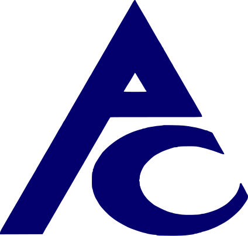

СЕРТИФИКАЦИЯ
Это процесс, в рамках которого проводится экспертиза деятельности агентства недвижимости или брокерской компании на соответствие их услуг требованиям, установленным Национальным стандартом Системы сертификации «Риэлторская деятельность. Услуги брокерские на рынке недвижимости. Общие требования».
Получить консультацию
Прозрачная репутация
Сертификация отражает приверженность агентства к соблюдению стандартов работы и законодательства
Конкурентное преимущество
Сертификация, предлагаемая агентством среди конкурентов, подчеркивает его приверженность стандартам качества
Знак качества
Сертификат Гильдии — это знак качества, который помогает
укрепить доверие клиентов и повышать их лояльность
укрепить доверие клиентов и повышать их лояльность
Дополнительный канал рекламы
Внесение в Единый Реестр (https://reestr.rgr.ru/) сертифицированных агентств предоставляет доступ к внешним каналам привлечения клиентов
Правовая защита
Комитет по этике предоставляет возможность на бесплатную помощь в досудебном разрешении споров


Агентства недвижимости, подтвердившие соответствие своих услуг требованиям Стандарта, получают Сертификат соответствия и право использования знака соответствия на сайте и в своих рекламных материалах.
Что такое знак:
Это НАДЕЖНОСТЬ, подтвержденный опыт работы компании на рынке, обученный персонал, прошедший процедуру аттестации
Это УВЕРЕННОСТЬ, безопасность расчетов, страхование профессиональной ответственности агентства недвижимости
Это КАЧЕСТВО, полнота и своевременность оказания услуги
Знак соответствия — зарегистрированный в установленном порядке знак, который является формой доведения до потребителя и других заинтересованных сторон информации о подтверждении соответствия маркированной им продукции или услуги требованиям Системы сертификации.

@@for (var i = 0; i < 6; i++) {
}
@@for (var i = 0; i < 6; i++) {
}